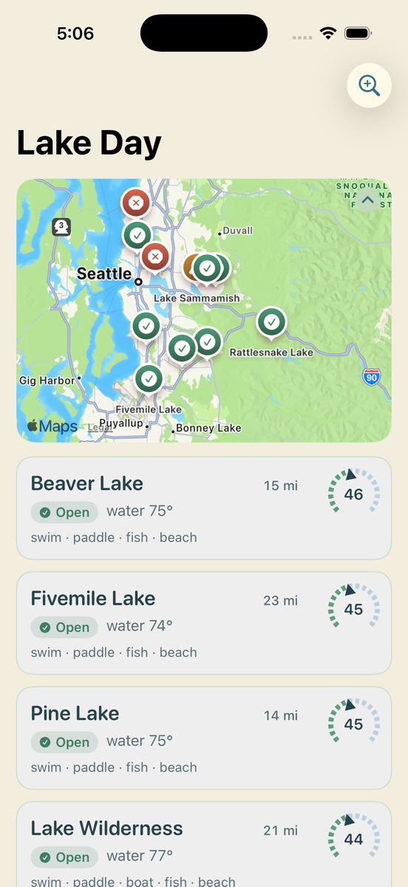

Personal tool · Washington lakes
An iOS app that reads the county’s swim-beach program, the forecast and the drive, then tells you whether today is worth the trip — and says so plainly when it isn’t.
82
lake day score
Saturday looks like a lake day — 82° air, 76° water.Sampled Tue · 4 days ago
Illustrative — try a closure.
The list
Lakes sort by score, and each card carries enough to decide without opening it. The map above them pins each lake by safety state, so a closure is visible before you read a word.

Never a fake green
Safety is the first thing the app resolves and the only thing that can override everything else. A closure zeroes the score outright — no number, no “but the weather’s nice.” When a feed breaks, the state degrades to unknown rather than defaulting to something reassuring.
No advisory, and the sample behind it is recent.
An advisory, an algae watch, or a sample gone stale. Caps the score at 60.
High bacteria or a toxic-algae advisory. Score is zero and the dial slashes out.
No data, or the feed didn’t answer. Shown as missing, never as safe.
Where the numbers come from
Everything is fetched on-device. There is no server to go down, no key to rotate, and nothing about you leaves the phone except the requests themselves.
Weekly · sampled Mon/Tue
King County ArcGIS swim-beach program — one request covers all 30 monitored beaches. Seasonal, mid-May to September.
Hourly
Open-Meteo. Air temperature, sun and wind, scored per day so you can pick the day as well as the lake.
Hourly
Open-Meteo air quality. Surfaced as a note on the verdict rather than folded into the score — smoke is a reason to stay home, not a rating.
Live
Apple MapKit traffic-aware drive time against the free-flow baseline, plus a weekend and weather weighting. Always labelled an estimate, because that’s what it is — no ToS-legal real-time busyness source exists.
Live · cached 4h
National Weather Service active alerts plus a filtered per-lake news search. Display only; it never moves the score.
How the score is built
The components are always visible on the detail screen, so a 68 can be read rather than trusted. Weights live in one constants struct — they’re tuned against real weekends, not derived from anything.
Before any of that: an active closure sets the score to zero. Weather cannot argue with a bacteria advisory.
Build it
The Xcode project isn’t checked in — it's generated from project.yml, so there’s nothing to merge-conflict over.
git clone https://github.com/Nano-AI/lake-day.git
cd lake-day
brew install xcodegen && xcodegen
open LakeDay.xcodeprojPick the LakeDay scheme and an iPhone simulator. For a real phone, set your team under Signing & Capabilities — a free Apple ID works, and re-signs weekly. Tests cover the rating curves, the safety hard-zero and the feed parsers.